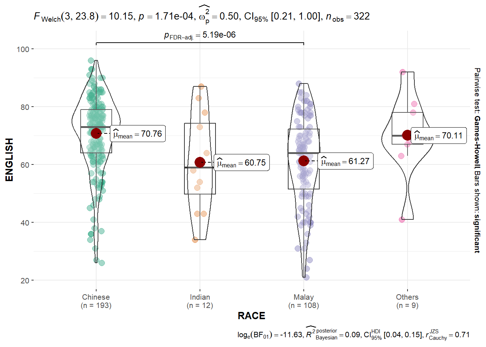

pacman::p_load(readr,tidyverse, FunnelPlotR, plotly, knitr)Hands-on Ex 4
12 Funnel Plots for Fair Comparisons
12.1 Overview
Funnel plot is a specially designed data visualisation for conducting unbiased comparison between outlets, stores or business entities. By the end of this hands-on exercise, you will gain hands-on experience on:
plotting funnel plots by using funnelPlotR package,
plotting static funnel plot by using ggplot2 package, and
plotting interactive funnel plot by using both plotly R and ggplot2 packages.
12.2 Installing and Launching R Packages
In this exercise, four R packages will be used. They are:
readr for importing csv into R.
FunnelPlotR for creating funnel plot.
ggplot2 for creating funnel plot manually.
knitr for building static html table.
plotly for creating interactive funnel plot.
12.3 Importing Data
In this section, COVID-19_DKI_Jakarta will be used. The data was downloaded from Open Data Covid-19 Provinsi DKI Jakarta portal. For this hands-on exercise, we are going to compare the cumulative COVID-19 cases and death by sub-district (i.e. kelurahan) as at 31st July 2021, DKI Jakarta.
The code chunk below imports the data into R and save it into a tibble data frame object called covid19.
covid19 <- read_csv("data/COVID-19_DKI_Jakarta.csv") %>%
mutate_if(is.character, as.factor)12.4 FunnelPlotR methods
FunnelPlotR package uses ggplot to generate funnel plots. It requires a numerator (events of interest), denominator (population to be considered) and group. The key arguments selected for customisation are:
limit: plot limits (95 or 99).label_outliers: to label outliers (true or false).Poisson_limits: to add Poisson limits to the plot.OD_adjust: to add overdispersed limits to the plot.xrangeandyrange: to specify the range to display for axes, acts like a zoom function.Other aesthetic components such as graph title, axis labels etc.
12.4.1 FunnelPlotR methods: The basic plot
The code chunk below plots a funnel plot.
funnel_plot(
.data = covid19,
numerator = Positive,
denominator = Death,
group = `Sub-district`
)
A funnel plot object with 267 points of which 0 are outliers.
Plot is adjusted for overdispersion. Things to learn from the code chunk above.
groupin this function is different from the scatterplot. Here, it defines the level of the points to be plotted i.e. Sub-district, District or City. If Cityc is chosen, there are only six data points.By default,
data_typeargument is “SR”.limit: Plot limits, accepted values are: 95 or 99, corresponding to 95% or 99.8% quantiles of the distribution.
12.4.2 FunnelPlotR methods: Makeover 1
The code chunk below plots a funnel plot.
funnel_plot(
.data = covid19,
numerator = Death,
denominator = Positive,
group = `Sub-district`,
data_type = "PR", #<<
x_range = c(0, 6500), #<<
y_range = c(0, 0.05) #<<
)
A funnel plot object with 267 points of which 7 are outliers.
Plot is adjusted for overdispersion. Things to learn from the code chunk above. + data_type argument is used to change from default “SR” to “PR” (i.e. proportions). + xrange and yrange are used to set the range of x-axis and y-axis
12.4.3 FunnelPlotR methods: Makeover 2
The code chunk below plots a funnel plot.
funnel_plot(
.data = covid19,
numerator = Death,
denominator = Positive,
group = `Sub-district`,
data_type = "PR",
x_range = c(0, 6500),
y_range = c(0, 0.05),
label = NA,
title = "Cumulative COVID-19 Fatality Rate by Cumulative Total Number of COVID-19 Positive Cases", #<<
x_label = "Cumulative COVID-19 Positive Cases", #<<
y_label = "Cumulative Fatality Rate" #<<
)
A funnel plot object with 267 points of which 7 are outliers.
Plot is adjusted for overdispersion. Things to learn from the code chunk above.
label = NA argument is to removed the default label outliers feature. title argument is used to add plot title. x_label and y_label arguments are used to add/edit x-axis and y-axis titles.